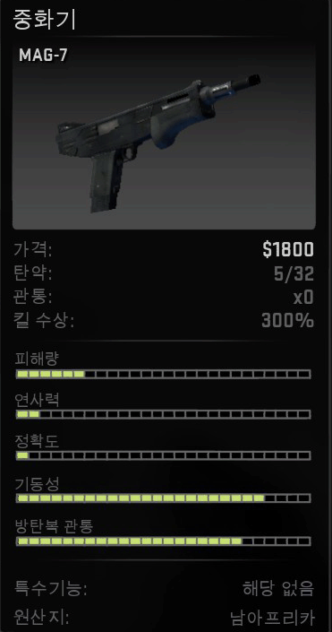

시작 하기에 앞서 킬 수상에서 %가 붙는것도 있고, 기본도 있는데 기본은 300달러이며 %는 "300X해당%" 입니다.
이제 부터는 대테러부대만 살 수 있는 무기들을 보러 갑시다!!
이번 작에서 새로 나온 p2000입니다.
전작의 usp보다 반동이 많아졌고 심지어 소음기가 사라져서 꽤 불편 합니다.어쩌피 전작도 소음기를 안 썼는데...(usp 대체가능)
스킨 업데이트로 다시 나온 usp입니다만, 총 탄창이 24발로 심하게 탄창이 부족합니다...
그리고 p2000보다 정확도는 높지만, 소음기를 달면 체감상 연사속도가 느리고, 소음기를 빼면, 반동이 늘어나는 양날의 검입니다. (p2000 대체가능)
언제나 나오는 파이브 세븐입니다.
일단 넉넉한 탄창에 피해량이 높지만 첫 판은 800달러로 시작하는 시스템상 첫판부터 사기에는 살짝 도박이 됩니다.

이번 작에서 새로 나온 맥-7입니다.
좋은 정확도에 높은 데미지, 빠른 재장전 시간 등등 장점도 많지만 탄약이 적고, 재장전 할때 쏠 수 없고 , 많이 흩어 집니다.
하지만, 이 샷건은 현재 돈이 필요할 때 빠르게 돈을 벌어 올 수 있는 건 확실합니다.
전작의 tmp를 대체한 mp9입니다만, 거의 쓰지를 않아요
이걸 사느니 차라리 mp7를 사라 할 정도로 별로 안 좋습니다. 저도 이건 아예 사용하지 않습니다.
3점사가 가능한 파마스 입니다.
일단 연사 속도가 빨라서 근거리에 있는 적은, 많이 맞아서 잡힐겁니다. 하지만 그 만큼 중거리에서는 힘들지만, 특수 기능인 3점사를 이용하면 쉽게 잡을수 있습니다.
지난 작에서 m4a1을 대체한 m4a4입니다.
일단, ak47에 비해 피해량은 적지만, 정확도가 높아 대태러가 많이 쓰는 총중 하나입니다. 하지만 소음기가 없다에서 살짝 원성을 듭니다.(m4a1-s 대체가능)
그래도, 대테러의 대표적인 총으로 총의 반동을 녹화해서 보여줍니다.
하지만 스킨 업데이트로 m4a1이 다시 나왔습니다.
usp와 같게 소음기가 추가가 되었고, 좋은 정확성이지만, 적은 탄창이 문제입니다.
사람들은 m4a4와 m4a1을 번갈아 가면서 쓰고 있습니다.(저는 a4유저입니다.)
역시 대태러를 대표하는 총이므로 반동을 녹화했습니다.(m4a4 대체가능)
대테러의 반자동 소총이어서 역시 제가 좋아 합니다. 오른쪽 버튼을 누르면 스코프를 통해 줌이 가능하므로, 지키는 쪽인 대테러에게는 꽤 좋은 무기입니다.
테러리스트에서 g3sg1이 있다면 대테러에서는 scar20이 있습니다.
g3sg1에서도 설명했듯이 얘네는 그냥 사기에요! 탄창 다 쓸때까지 기다렸다가 잡아야지 아니면 총알 벌집이 되는건 잡는 쪽이 될 수 있습니다.